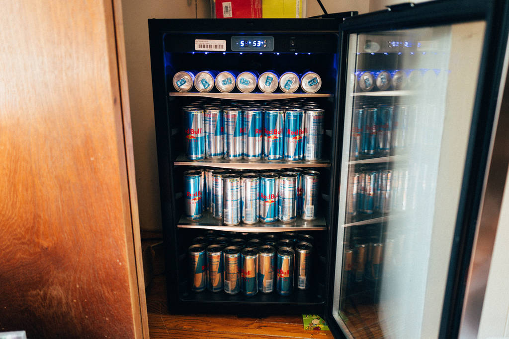

Machine Learning¶
Python has a vast number of libraries for data analysis, statistics, and Machine Learning itself, making it a language of choice for many data scientists.
Some widely used packages for Machine Learning and other data science applications are listed below.
SciPy Stack¶
The SciPy stack consists of a bunch of core helper packages used in data science for statistical analysis and visualising data. Because of its huge number of functionalities and ease of use, the Stack is considered a must-have for most data science applications.
The Stack consists of the following packages (link to documentation given):
The stack also comes with Python bundled in, but has been excluded from the above list.
scikit-learn¶
Scikit is a free and open source machine learning library for Python. It offers off-the-shelf functions to implement many algorithms like linear regression, classifiers, SVMs, k-means, Neural Networks, etc. It also has a few sample datasets which can be directly used for training and testing.
Because of its speed, robustness, and ease of, it’s one of the most widely-used libraries for many Machine Learning applications.
Installation¶
Through PyPI:
pip install -U scikit-learn
Through conda:
conda install scikit-learn
scikit-learn also comes shipped with Anaconda (mentioned above). For more installation instructions, refer to this link.
Example¶
For this example, we train a simple classifier on the Iris dataset, which comes bundled in with scikit-learn.
The dataset takes four features of flowers: sepal length, sepal width, petal length, and petal width, and classifies them into three flower species (labels): setosa, versicolor, or virginica. The labels have been represented as numbers in the dataset: 0 (setosa), 1 (versicolor), and 2 (virginica).
We shuffle the Iris dataset and divide it into separate training and testing sets, keeping the last 10 data points for testing and rest for training. We then train the classifier on the training set and predict on the testing set.
from sklearn.datasets import load_iris
from sklearn import tree
from sklearn.metrics import accuracy_score
import numpy as np
#loading the iris dataset
iris = load_iris()
x = iris.data #array of the data
y = iris.target #array of labels (i.e answers) of each data entry
#getting label names i.e the three flower species
y_names = iris.target_names
#taking random indices to split the dataset into train and test
test_ids = np.random.permutation(len(x))
#splitting data and labels into train and test
#keeping last 10 entries for testing, rest for training
x_train = x[test_ids[:-10]]
x_test = x[test_ids[-10:]]
y_train = y[test_ids[:-10]]
y_test = y[test_ids[-10:]]
#classifying using decision tree
clf = tree.DecisionTreeClassifier()
#training (fitting) the classifier with the training set
clf.fit(x_train, y_train)
#predictions on the test dataset
pred = clf.predict(x_test)
print pred #predicted labels i.e flower species
print y_test #actual labels
print (accuracy_score(pred, y_test))*100 #prediction accuracy
Since we’re splitting randomly and the classifier trains on every iteration, the accuracy may vary. Running the above code gives:
[0 1 1 1 0 2 0 2 2 2]
[0 1 1 1 0 2 0 2 2 2]
100.0
The first line contains the labels (i.e. flower species) of the testing data as predicted by our classifier, and the second line contains the actual flower species as given in the dataset. We thus get an accuracy of 100% this time.
More on scikit-learn can be read in the documentation.